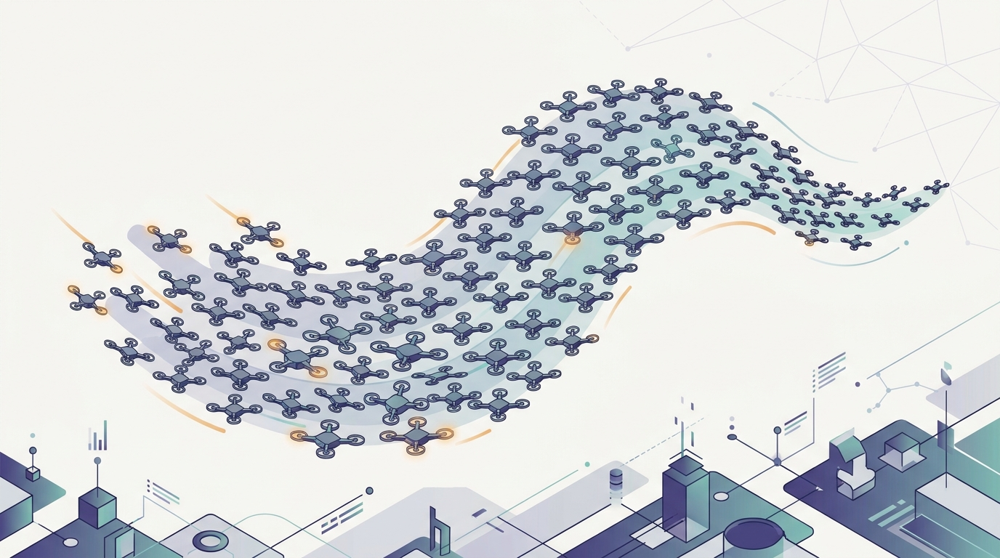

"Nobody told me where to go. I just followed the strongest scent, dropped a little of my own, and kept walking. Somehow the colony found the shortest path, and I take full credit for a route I never once saw."
An Ant Who Has Never Read the Map
Swarm intelligence is the study of how coordinated, robust, and useful global behavior emerges from very many agents that each follow simple local rules, sensing only their neighbors or a shared environment, with no central controller and no global plan. It is the most decentralized form of coordination in this book: where Chapter 29 designed the protocols by which agents reach agreement and Chapter 30 let agents learn their coordination through reward, this chapter shows that coordination can require neither design at the group level nor learning over joint state. A single ant, bird, or particle is almost trivial; the sophistication lives entirely in the interaction. Nine sections develop the discipline from the ground up. They open with collective intelligence, the broad capacity of a group to compute what no member can, then sharpen it into swarm intelligence as an engineering method, and then work through the algorithms the field has made canonical: ant colony optimization and stigmergy, where the environment itself is the communication channel; particle swarm optimization, where a population searches a continuous space by sharing best-found positions; flocking, whose three local rules produce coherent motion and link to distributed consensus; collective perception and emergent communication, where the group senses and signals beyond any individual's reach; and coordination without central control as the unifying principle. The closing section faces the failure modes squarely, because decentralized systems fail in their own characteristic ways: premature convergence, error cascades, and brittle consensus. This is the chapter where Part VI reaches its most extreme answer to the question that has run through it all, namely how independent pieces act as one, and the answer here is that they need no conductor at all.
Chapter Overview
This is the emergence chapter of Part VI, and its subject is the gap between coordination that is designed or learned and coordination that simply arises from simple agents interacting locally. The nine sections develop that subject in order. They begin with collective intelligence as the broad phenomenon and swarm intelligence as its engineering, then build the canonical algorithms one by one, ant colony optimization, particle swarm optimization, and flocking, before pushing into the harder territory of collective perception and emergent communication, naming the organizing principle of coordination without central control, and closing with the failure modes that decentralized systems suffer and centralized ones do not. The through-line is the inversion of control: there is no coordinator anywhere in any of these systems, and the global behavior is a property of the interaction rules, not of any agent's plan.
The nine sections fall into three movements. The first frames the phenomenon: Section 31.1 introduces collective intelligence, the capacity of a group to compute, decide, or perceive what no individual member can, and Section 31.2 sharpens it into swarm intelligence as the deliberate engineering of useful global behavior from simple local interaction. The second movement builds the canonical algorithms: Section 31.3 develops ant colony optimization and the stigmergy that lets agents coordinate through a shared environment, Section 31.4 develops particle swarm optimization for continuous search, and Section 31.5 develops flocking and its direct tie to the distributed consensus of Chapter 29. The third movement reaches past motion and optimization: Section 31.6 builds collective perception, Section 31.7 studies how a communication code can emerge among agents that were never given one, Section 31.8 names coordination without central control as the principle behind it all, and Section 31.9 closes with the failure modes of collective systems.
Read in order, the nine sections take you from "a group can compute what no member can" to a working understanding of how to engineer that property and where it breaks: define collective intelligence, frame swarm engineering, let agents coordinate through a shared trail, search a continuous space by sharing best positions, steer a flock with three local rules, build a shared percept, grow a shared language, name the no-coordinator principle, and then face the cascades and bad consensus that decentralization invites. The argument is cumulative and it carries the consensus machinery of Chapter 29 into a new regime: where consensus there was a protocol agents executed to agree, flocking and collective perception here make agreement an emergent property of local averaging. The learned coordination of Chapter 30 becomes the foil against which this chapter's rule-based emergence is defined, and the thread runs straight out into the agent orchestration of Chapter 32, where the same decentralization principles are applied to large language model agents working in concert.
Prerequisites
This chapter builds most directly on Chapter 29: Multi-Agent Systems, and especially on its treatment of consensus. The flocking of Section 31.5 and the collective perception of Section 31.6 are, at heart, distributed consensus reached through repeated local averaging rather than through a designed agreement protocol, so the reader should carry from Chapter 29 a clear picture of what it means for autonomous agents on partial, local views to converge on a shared value, and why that convergence depends on how information flows between neighbors. From the same chapter the reader carries the broader engineering frame of a society of autonomous agents acting in a shared environment, since a swarm is exactly such a society stripped down to its simplest possible members. The chapter also assumes the strategic vocabulary of multi-agent interaction developed earlier in Part VI, enough to see why a swarm needs no equilibrium reasoning to coordinate, and light familiarity with optimization, since ant colony optimization and particle swarm optimization are, formally, population-based search methods. Basic probability and the ability to read pseudocode are assumed throughout, as in the rest of the book. No prior exposure to swarm intelligence, biology, or self-organization is required; Sections 31.1 and 31.2 build the field from the ground up before anything is built on it.
Learning Objectives
- Define collective intelligence and explain how a group can compute, decide, or perceive what no single member can, distinguishing it from the aggregation of independent judgments.
- Characterize swarm intelligence as the engineering of useful global behavior from simple local interaction, and identify the ingredients (many simple agents, local sensing, indirect or local communication, no central control) that every swarm method shares.
- Apply ant colony optimization to a combinatorial problem, explaining how stigmergy turns a shared environment into a communication channel and how pheromone deposition and evaporation balance exploration against exploitation.
- Apply particle swarm optimization to a continuous optimization problem, and reason about how the personal-best and global-best terms drive the population toward good solutions.
- Derive the three local rules of flocking and explain how they produce coherent group motion, relating this emergent agreement to the distributed consensus of Chapter 29.
- Explain collective perception and emergent communication, showing how a swarm can build a shared estimate of its environment and how a signaling code can arise among agents that were never given one.
- State the principle of coordination without central control, and diagnose the characteristic failure modes of collective systems, including premature convergence, error cascades, and brittle consensus.
If you keep one thing from this chapter, keep this: swarm intelligence shows that sophisticated, robust global coordination can emerge from very many agents following simple local rules with no central control, and the field's algorithms (ant colony optimization, particle swarm optimization, and flocking) are different mechanisms by which local interaction (a shared pheromone trail, shared best positions, three steering rules) produces useful collective behavior for free and at scale. Read forward, the sections build the discipline in the order a practitioner needs it: first name the phenomenon and the engineering method, then build the canonical algorithms from the shared environment outward, then reach past motion into collective perception and emergent communication, name the no-coordinator principle that unifies them, and end with the failure modes that decentralization invites. Read as a question, the chapter asks of any group of simple agents: what can the collective compute that no member can, how do we engineer that, can a shared trail coordinate them, can shared best positions guide a search, can three rules make them move as one, can they perceive and signal beyond any individual's reach, what is the principle that ties it together, and how does the whole thing fail. The roadmap below walks the nine sections that answer it, and the last one carries the thread of decentralization straight into the chapter ahead.
Chapter Roadmap
- 31.1 Collective Intelligence Introduces the broad phenomenon of a group computing, deciding, or perceiving what no individual member can, and distinguishes genuine collective computation from the simple aggregation of independent opinions.
- 31.2 Swarm Intelligence Sharpens collective intelligence into an engineering method, naming the ingredients every swarm shares: many simple agents, local sensing, indirect or local communication, and no central control.
- 31.3 Ant Colony Optimization Develops the canonical stigmergic algorithm, in which agents coordinate by depositing and sensing pheromone on a shared environment, balancing exploration and exploitation through deposition and evaporation.
- 31.4 Particle Swarm Optimization Develops population-based search over a continuous space, where each particle moves under the pull of its own best-found position and the best position shared across the swarm.
- 31.5 Flocking and Distributed Consensus Derives the three local steering rules (separation, alignment, cohesion) that produce coherent group motion, and shows that the resulting agreement is the distributed consensus of Chapter 29 reached by local averaging.
- 31.6 Collective Perception Builds a swarm's ability to form a shared estimate of its environment that no single member could measure, turning many noisy local observations into one collective percept.
- 31.7 Emergent Communication Studies how a shared signaling code can arise among agents that were never given one, connecting the classic signaling game to the emergent protocols of modern multi-agent learning.
- 31.8 Coordination Without Central Control Names the organizing principle behind the whole chapter, that robust global order can arise with no coordinator anywhere, and draws out why decentralization buys scalability and fault tolerance.
- 31.9 Failure Modes in Collective Systems Extends classical swarms to LLM-driven agent swarms: each particle is an LLM call rather than a arithmetic update; introduces Generative Agents (Smallville), discusses the infrastructure requirements of large-population simulacra, and situates the compute-cost tradeoff against classical bio-inspired approaches.
Read the nine sections in order and you will hold a working model of how simple agents become a coordinated whole: Section 31.1 defines collective intelligence, Section 31.2 frames swarm engineering, Section 31.3 coordinates agents through a shared pheromone trail, Section 31.4 searches a continuous space by sharing best positions, Section 31.5 steers a flock with three local rules, Section 31.6 builds a shared percept, Section 31.7 grows a shared language, Section 31.8 names the no-coordinator principle, and Section 31.9 faces the failure modes. The thread to watch is the inversion of control: nowhere in any of these systems is there a coordinator, and yet coordinated behavior appears, robust and scalable, as a property of local interaction alone. That thread runs straight out of the chapter into the agent orchestration of Chapter 32, where the same decentralization principles are turned on populations of large language model agents working together.
What's Next?
This chapter built the most decentralized corner of Part VI: how coordinated, robust, global behavior emerges from very many agents following simple local rules with no central control, from collective intelligence and swarm engineering through ant colony optimization, particle swarm optimization, and flocking, into collective perception and emergent communication, and out to the failure modes that decentralization invites. The agents here are deliberately simple, and the sophistication lives in the interaction rather than in any individual. Chapter 32: Distributed Agent Orchestration carries the same decentralization principles into a very different kind of agent. Instead of ants, birds, and particles, it works with large language model agents, each one individually powerful, and asks how to compose many of them into a working distributed system: planner and executor roles, tool use, debate and critique across agents, communication protocols, shared distributed memory, and the orchestration engines that run it all. Where this chapter showed that simple agents need no coordinator to act as one, the next asks what coordination, and what failure modes, return when the agents are no longer simple. Read Chapter 32 next, and watch the swarm grow up into a society of reasoning agents.
Bibliography & Further Reading
Foundations of Swarm Intelligence
Bonabeau, E., Dorigo, M., Theraulaz, G. "Swarm Intelligence: From Natural to Artificial Systems." Oxford University Press, 1999. global.oup.com
The book that named and organized the field, drawing the line from social-insect behavior to engineered swarm algorithms, the foundational reference for Sections 31.2 and 31.3.
Brambilla, M., Ferrante, E., Birattari, M., Dorigo, M. "Swarm Robotics: A Review from the Swarm Engineering Perspective." Swarm Intelligence, 7(1), 2013. springer.com
The survey that frames swarm robotics as an engineering discipline rather than a collection of biological analogies, the methodological backbone of the swarm-engineering view in Section 31.2.
Stigmergy and Ant Colony Optimization
Dorigo, M., Maniezzo, V., Colorni, A. "Ant System: Optimization by a Colony of Cooperating Agents." IEEE Transactions on Systems, Man, and Cybernetics, Part B, 26(1), 1996. ieeexplore.ieee.org
The paper that turned ant foraging into a general optimization method, introducing pheromone deposition and evaporation as the mechanism behind Section 31.3.
Particle Swarm Optimization
Kennedy, J., Eberhart, R. "Particle Swarm Optimization." Proceedings of the IEEE International Conference on Neural Networks (ICNN), 1995. ieeexplore.ieee.org
The paper that introduced particle swarm optimization, where a population searches a continuous space under the pull of personal-best and global-best positions, the basis of Section 31.4.
Flocking and Distributed Consensus
Reynolds, C. W. "Flocks, Herds and Schools: A Distributed Behavioral Model." Proceedings of SIGGRAPH '87, Computer Graphics, 21(4), 1987. dl.acm.org
The boids model whose three local rules (separation, alignment, cohesion) produce coherent flocking, the historical anchor and worked example of Section 31.5.
Vicsek, T., Czirók, A., Ben-Jacob, E., Cohen, I., Shochet, O. "Novel Type of Phase Transition in a System of Self-Driven Particles." Physical Review Letters, 75(6), 1995. journals.aps.org
The minimal self-propelled-particle model showing that local alignment alone produces a phase transition to collective motion, the physics-side foundation for the consensus reading of Section 31.5.
Olfati-Saber, R. "Flocking for Multi-Agent Dynamic Systems: Algorithms and Theory." IEEE Transactions on Automatic Control, 51(3), 2006. ieeexplore.ieee.org
The control-theoretic treatment that puts flocking on rigorous footing and makes explicit its link to distributed consensus, central to Section 31.5.
Emergent Communication
Lazaridou, A., Baroni, M. "Emergent Multi-Agent Communication in the Deep Learning Era." arXiv:2006.02419, 2020. arxiv.org
The survey of how communication protocols emerge among learning agents in deep multi-agent settings, the modern bridge for the emergent-communication treatment of Section 31.7.
Collective Intelligence and Crowds
Surowiecki, J. "The Wisdom of Crowds." Doubleday, 2004. penguinrandomhouse.com
The popular synthesis of when aggregated independent judgments outperform any single expert, the accessible entry point to the collective-intelligence framing of Section 31.1.
Bikhchandani, S., Hirshleifer, D., Welch, I. "A Theory of Fads, Fashion, Custom, and Cultural Change as Informational Cascades." Journal of Political Economy, 100(5), 1992. journals.uchicago.edu
The model of how rational agents observing one another can cascade into a shared but fragile decision, the theoretical anchor for the error-cascade failure mode of Section 31.9.